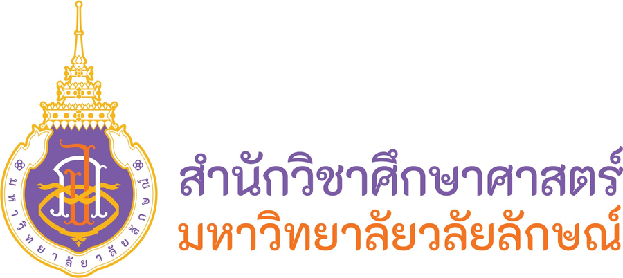

Listening การฟัง
จาก 495 คะแนน
ตอบถูก / 100 ข้อ

EDU-TOEIC สอบ TOEIC เสมือนจริง · ศึกษาศาสตร์ 1/2569
คะแนนของแต่ละคนเป็นความลับ ระบบจะแสดงเฉพาะคะแนนของรหัสที่กรอกถูกต้องเท่านั้น
ผลการสอบของ
·
ตอบถูก / 100 ข้อ
ตอบถูก / 100 ข้อ
Listening + Reading
* คะแนนเป็น คะแนนประมาณการ ที่แปลงจากร้อยละของข้อที่ตอบถูกตามตารางแปลงคะแนนของ ETS
(Estimate a TOEIC score from % correct on Practice Test) ไม่ใช่คะแนนสอบ TOEIC อย่างเป็นทางการ
หน้าจอนี้จะถูกล้างอัตโนมัติใน 2:00 นาที เพื่อความเป็นส่วนตัว